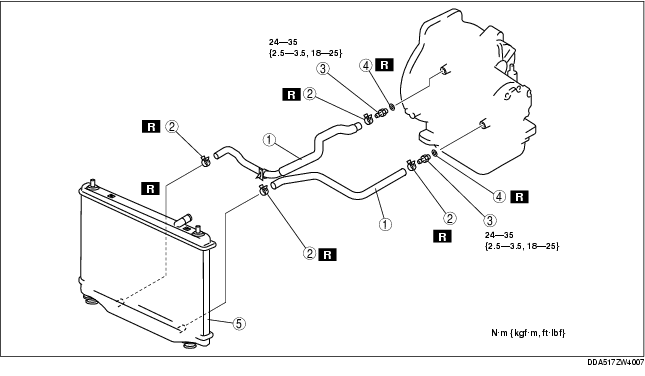

1. Disconnect the negative battery cable.
2. Drain the ATF into a container. (See AUTOMATIC TRANSAXLE FLUID (ATF) REPLACEMENT [FN4A-EL].)
3. Remove the battery, battery tray and battery tray bracket.
4. Remove the fresh-air duct. (See INTAKE-AIR SYSTEM REMOVAL/INSTALLATION [ZY].)
5. Remove in the order indicated in the table.
6. Install in the reverse order of removal.
7. Add ATF to the specified level. (See AUTOMATIC TRANSAXLE FLUID (ATF) REPLACEMENT [FN4A-EL].)
8. Connect the negative battery cable.
9. Inspect for oil leakage from the oil pipes and oil hoses.
10. Inspect for coolant from the hoses.
11. Inspect the ATF level and condition. (See AUTOMATIC TRANSAXLE FLUID (ATF) INSPECTION [FN4A-EL].)
12. Carry out the line pressure test. (See MECHANICAL SYSTEM TEST [FN4A-EL].)
13. Carry out the road test. (See ROAD TEST [FN4A-EL].)

.
1. The automatic transaxle oil cooler flushing must be performed whenever a transaxle is removed for service because the existing fluid may be contaminated, and to prevent contamination of new fluid.
2. Follow the instructions in the manufacturer's publication for flushing operation.
1. Apply compressed air to the cooler-side opening, and blow any remaining grime and foreign material from the cooler pipes. Compressed air should be applied for no less than 1 min.
2. Align the marks, and slide the oil hose onto the oil pipe until it is fully seated as shown.
3. Install the new hose clamp onto the hose.
4. Verify that the hose clamp does not interfere with any other components.